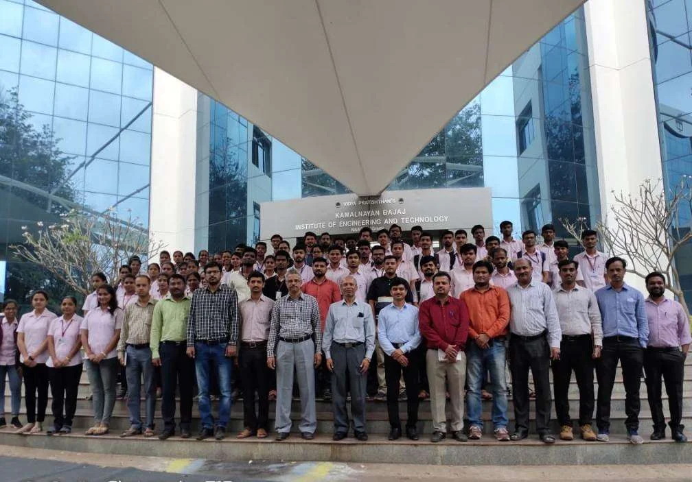
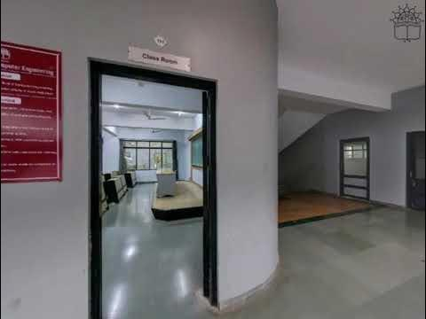
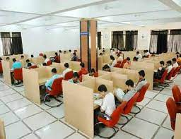
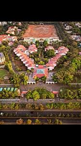

collage
Home
City
Hobbies
Contact
Vidya pratishthan

Vidya Pratishthan's Kamalnayan Bajaj Institute of Engineering and
Technology (VPKBIET) in Baramati, Maharashtra, is a prominent
engineering college established in 2000. It is affiliated with
Savitribai Phule Pune University and approved by the All India
Council for Technical Education (AICTE) (VPKBIET) (Careers360).
Academic Programs

VPKBIET offers undergraduate and postgraduate programs in various engineering disciplines.
Some of the popular courses include:
B.E./B.Tech in Mechanical Engineering, Civil Engineering, Electrical
Engineering, Computer Engineering, and Artificial Intelligence and Data Science.
M.E./M.Tech in Robotics and Automation, Artificial Intelligence and Data Science,
and Structural Engineering (Careers360) (Top Colleges and Universities in India).
Campus and Facilities

The campus spans 20 acres and includes modern facilities such as:
1: A well-stocked library with numerous books and journals
2: Separate hostels for boys and girls
3: Indoor and outdoor sports facilities

4: Advanced computer labs (VPKBIET) (Careers360).
Accreditation and Ranking
The institute is accredited by the National Board of Accreditation (NBA)
and has received an A+ grade from the National Assessment and Accreditation
Council (NAAC) with a CGPA of 3.26 on a 4-point scale (Careers360).
Placement and Career Opportunities
VPKBIET has an active placement cell that trains students in technical
and soft skills. The placement rate is commendable, with companies like TCS,
Infosys, Cognizant, and Capgemini frequently visiting the campus. The average
salary package offered to graduates is around INR 4 lakh per annum, with the
highest packages reaching up to INR 10 lakh per annum (Careers360) (Top Colleges
and Universities in India).
Location and Accessibility

The college is located on Baramati Bhigwan Road, about 5.3 km from Baramati
Railway Station and 7.4 km from Baramati Airport, making it easily accessible
for students from various regions (Careers360).